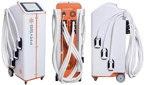
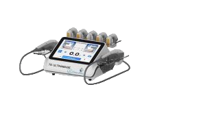

Nuestras Maquinas
Vela Slim Plus

Es un tratamiento no invasivo que combina 4 tecnologias en un mismo cabezal actuando en simultaneo: Radiofreceuncia, vacumterapia, infrarrojos y masaje con rodillos.
Acuta tanto en capas superficiales como en profundas de la piel, logrando asi una reduccion del paniculo adiposo, modelando el contorno corporal atenuando y tratando celulitis y reafirmando la piel.
lo ideas es realizarlo 1 vez cada 15 dias, y se recomiendas un minimo de 4/6 sesiones dependiendo el tipo y grado de celulitis o adiposidad a tratar, y como cualquier tratameinto debe tener el apoyo domiciliario que requiere
Criolipolisis
La criolipolisis es una tecnica para la eliminacion de la grasa localizada (esa grasa dificil de sacar), destruye el tejido adiposo sin necesidad de cirugias.
Se basa en un descenso de la temperatura de la grasa localizada por debajo de los 0 grados durante el tiempo de la sesion, de esta forma la celula grasa llamada adipocito se destruye por cristalizacion y posterior eliminacion de lipidos en un periodo entre 2 y 6 semanas.
El equipo cuenta con 4 cabezales planos, la sesion demora entre 30 y 40 minutos. Se rcomiendo un minimo de 3/4 sesiones cada 25 dias,Dependiendo del paniculo adiposo a tratar.
No es invasiva, no deja hematomas ni provoca dolor. Se puede realizar en la zona de Brazos, Flancos, Abdomen, Cara interna de los muslos, Pnatalon de montar y Espalda inferior/superior
Hifu 7D
Hifu 7D o Lifting sin cirugia es la ultima bomba en aparatologia facial y corporal. Este tratamiento se realiza una vez al año en facial y cada 6 meses en corporal.
La misma disminuye la grasa localizada, mejora el aspecto de las estrias y la celulitis, estimula las celulas de colageno y elastina, produce un efecto tensado en la piel y mejora gradualmente la flacidez.
Cristal 3d

Es la maquina de Depilacion Laser, cuenta con una eficacia clinicamente comprobada, es rapida e indolora, apta para todos los fototipos de piel, blanque zonas oscurezidas y se puede realizar en cualquier epoca del año